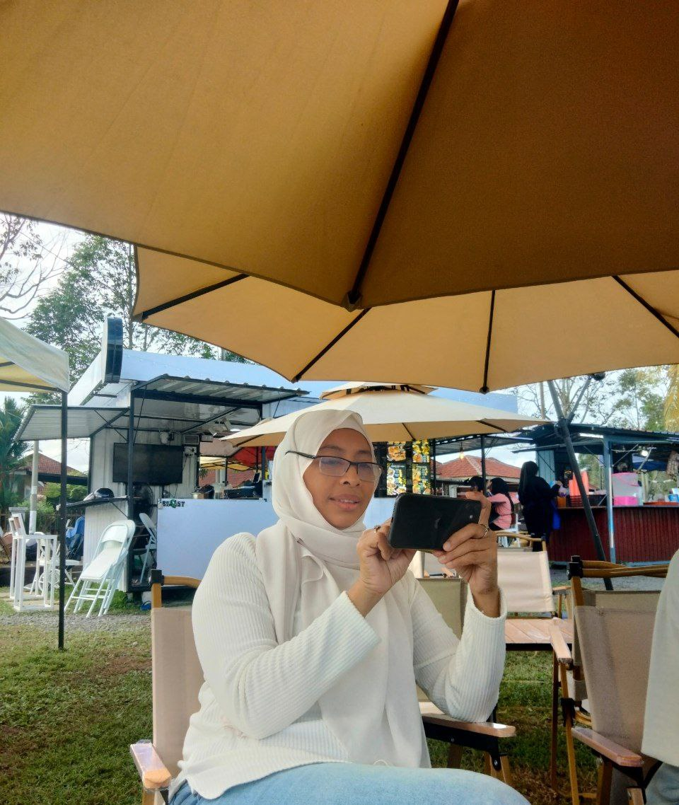

By the way, I'm really sorry that I skipped family information, I think it's too private for me to talk about my family, so here I will just tell my mom's characteristics.
My mom is a teacher, she is a sporting teacher when the students get to know her, but they don't, they will think of my mom as a scary teacher. It same when she is at home, she is really strict with us. I may have had her in my youth age, but not now, because I understand her, I know why she did that.
She was a father and she was a mother, she is a single mother with four children that she needs to support alone. Our father is such an irresponsible father, he just let us survive with my mother without helping financially or physically. So most of our siblings have depression because of the stress of enduring their problems and my mom's strict personality. But we are okay now, we all understand why she did that.
She is just a woman who has a kid, who has a problem, who has a burden to support it. She alone has to endure it all. While other women will have their husbands or family who can support them, who can be a place to unleash their anger, problems, sadness, and a lot of emotion but not my mom she alone, just had us so being strict with anger issues is how she can unleash her emotions. So we all understand that she just has us, she doesn't have a husband to unleash her emotion.
So here, I studied hard to give everything I had to my mother. One of my wishes is to give her everything she wants, but if I can't give her everything she wants, at least I can send her to Haji once in her life. Because I know she wants it.
This is because I had seen my mom sit on the carpet for a long time and she watched the story WhatApps repeatedly seeing a lot of her friends doing Haji but she can do it because of financial problems in support of us.